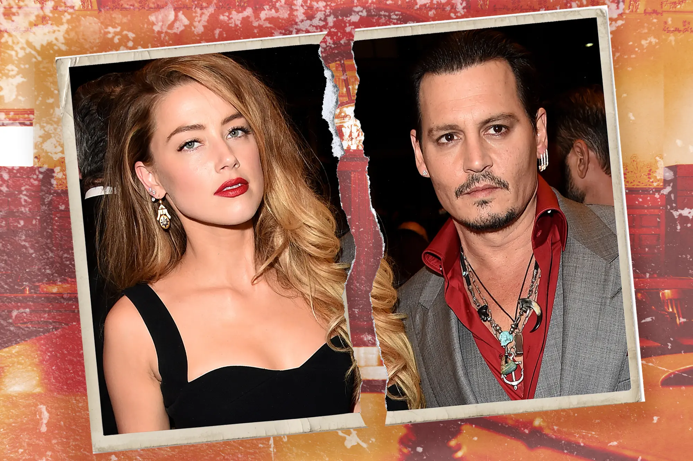

<div class="container mt-4">
    <div class="row justify-content-center">
        <div class="col-md-12 mb-4">
            <div class="text-center">
                <h2>Depp and Heard's legal battle</h2>
                <hr/>
                <div class="depp mt-4 mb-4">
                    
                </div>
            </div>
            <div class="row">
                <div class="col-md-6 mt-4">
                    <p>
                        Jhonny Depp's case against Amber Heard began shortly after their separation, when, in 2018, Heard published a defamatory article in The Washington Post, where she claimed that Jhonny Depp was a public figure who represented domestic abuse. <br/>                        As a result of these statements, Depp was involved in numerous problems with the companies with which he had already agreed several films, such as Warner Bros and Disney, even losing leading roles such as Grindelwald in the Fantastic
                        Animals saga, and Jack Sparrow in the Pirates of the Caribbean saga. <br/> Faced with this situation, Depp filed a lawsuit for defamation and slander against his ex-wife, which took them both to the jury in April 2022, making the
                        trial one of the most famous and controversial legal disputes in the history of Hollywood. During the litigation, which lasted approximately 6 weeks, Johnny Depp's lawyers tried to prove that domestic violence had never occurred
                        on the part of their defendant, and that, on the contrary, it was Heard who had caused both physical and psychological damage to the renowned actor.
                    </p>
                </div>
                <div class="col-md-6 mt-4">
                    <p>
                        On the other hand, Heard's defense tried to prove that Depp was an abuser, and that, additionally, Depp's lawyer had incurred in slander against his client in 2020, due to an inconvenience with the destruction of a Penthouse of the couple in the United
                        Kingdom. <br/> Finally, after providing the respective evidence of each party, hearing witnesses, and Depp and Heard themselves testified, the court of Fairfax, Virginia determined that Depp had indeed been
                        defamed and abused by Amber Heard, for which a fine of 10 million dollars was imposed, which the actress must agree with Depp's lawyers to pay in a period to be established. However, Depp must also compensate Amber Heard, for proven
                        defamation in 2020, with a sum of two million dollars. <br/> Certainly, the commotion generated in social networks had too many nuances, where issues of gender and abuse in the great Hollywood entertainment industry were strongly
                        involved. However, the lesson of this case is that the presumption of innocence should be maintained until proven otherwise, and that both male and female victimization should be questioned before publicly canceling people who
                        do not deserve it.
                    </p>
                </div>
            </div>
        </div>
    </div>
</div>